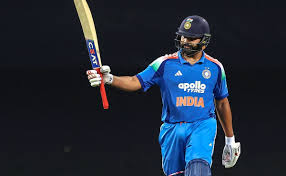
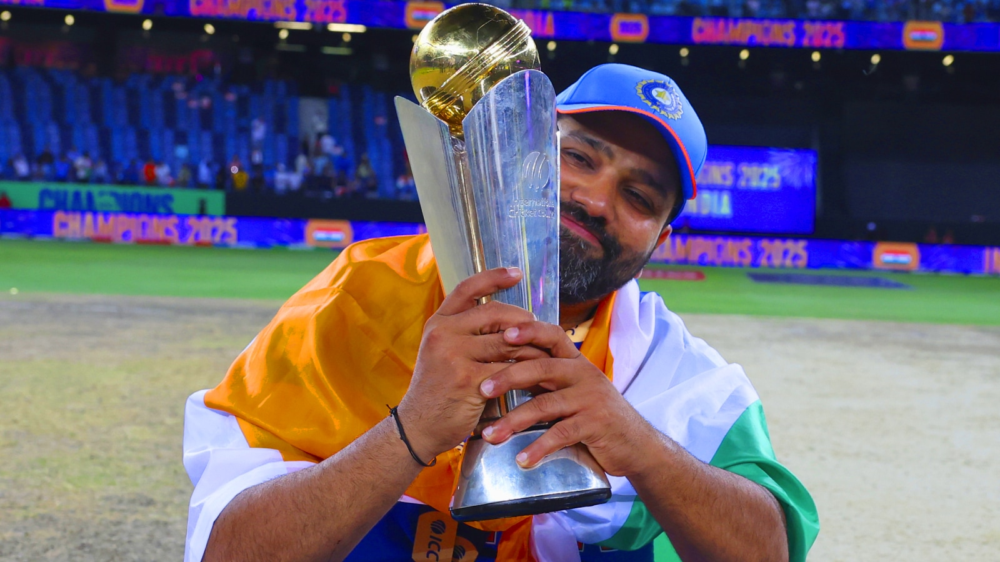

The Hitman


Rohit Gurunath Sharma (born 30 April 1987) is an Indian international cricketer and the former captain of the India national cricket team in all formats of the game.[3] He is a right-handed top-order batter. He represents Mumbai in domestic cricket and Mumbai Indians in the Indian Premier League. Sharma was a member of the teams that won the 2007 T20 World Cup, the 2013 ICC Champions Trophy and was the winning captain of the 2024 T20 World Cup and the 2025 ICC Champions Trophy. Sharma holds several batting records which include most runs in T20 Internationals, most sixes in international cricket,[a] most double centuries in ODI cricket (3), most centuries at Cricket World Cups (7) and joint most hundreds in Twenty20 Internationals (5).[5] He also holds the world record for the highest individual score (264) in a One Day International (ODI) and also holds the record for scoring most hundreds (five) in a single Cricket World Cup, for which he won the ICC Men's ODI Cricketer of the Year award in 2019.[6] He is the first and only captain to lead a team in all[b] ICC tournament finals.[7] He formerly captained Mumbai Indians and the team has won five Indian Premier League titles in 2013, 2015, 2017, 2019 and 2020 under him,making him themost successful captain in IPL history, sharing this record with MS Dhoni. He is also one of two players who have played in every edition of the T20 World Cup, from the inaugural edition in 2007 till 2024.[c] He is the only Indian player to win two T20 World Cups. He became the second Indian captain to win a T20 World Cup. He has received two national honours, the Arjuna Award in 2015 and the prestigious Khel Ratna Award in 2020 by the Government of India. Under his captaincy, India won the 2018 Asia Cup and the 2023 Asia Cup, the seventh and eighth time the country won the title, both in ODI format as well as the 2018 Nidahas Trophy, their second overall and first in T20I format.
Sharma was born on 30 April 1987 into a Marathi-Telugu family in Bansod, Nagpur, Maharashtra, India.[8][9][3] His mother, Purnima Sharma, is from Visakhapatnam, Andhra Pradesh.[10] His father, Gurunath Sharma, worked as a caretaker of a transport firm storehouse. Sharma was raised by his grandparents and uncles in Borivali because of his father's low income. He would visit his parents, who lived in a single-room house in Dombivli, only during weekends.[11] He has a younger brother, Vishal Sharma.[12] Sharma joined a cricket camp in 1999 with his uncle's money. Dinesh Lad, his coach at the camp, asked him to change his school to Swami Vivekanand International School, where Lad was the coach and the cricket facilities were better than those at Sharma's old school. Sharma recollects, "I told him I couldn't afford it, but he got me a scholarship. So for four years I didn't pay a penny, and did well in my cricket".[12] Sharma started as an off-spinner who could bat a bit before Lad noticed his batting ability and promoted him from number eight to open the innings. He excelled in the Harris and Giles Shield school cricket tournaments, scoring a century on debut as an opener.[13]
Sharma married Ritika Sajdeh, a sports presenter, on 13 December 2015. They have a daughter named Samaira, born in December 2018.[14][15] Sharma is a devout Hindu and has a tattoo of Lord Ganesha on his right arm.[16] He is also an avid dog lover and has two pet dogs named Bruno and Bruno Jr.[17]
Sharma is known for his elegant batting style and ability to score big runs. He is particularly strong on the off-side and has a wide range of shots, including the pull shot, cut shot, and lofted drives. He is also known for his ability to play long innings and has a high batting average in all formats of the game.
| Competitions | Odi | T20 | Tests | FC |
|---|---|---|---|---|
| Runs Scored | 4,301 | 11,577 | 4,231 | 9,318 |
| Batting Average | 40.57 | 48.85 | 32.05 | 49.04 |
| 100s/50s | 12/18 | 33/61 | 5/32 | 29/38 |
| Top score | 212 | 264 | 121* | 309* |
| Balls bowled | 383 | 610 | 68 | 2,153 |
| Wickets | 2 | 9 | 1 | 24 |
| Bowling average | 112.00 | 59.22 | 113.00 | 48.08 |
| 5 wickets in innings | 0 | 0 | 0 | 0 |
| 10 wickets in match | 0 | 0 | 0 | 0 |
| Best bowling | 1/26 | 2/27 | 1/22 | 4/41 |
| Catches/stumpings | 68/– | 103/– | 65/– | 114/– |